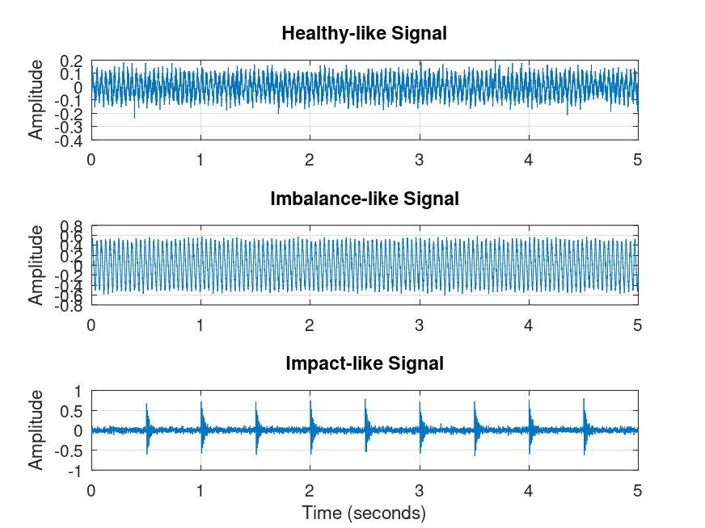
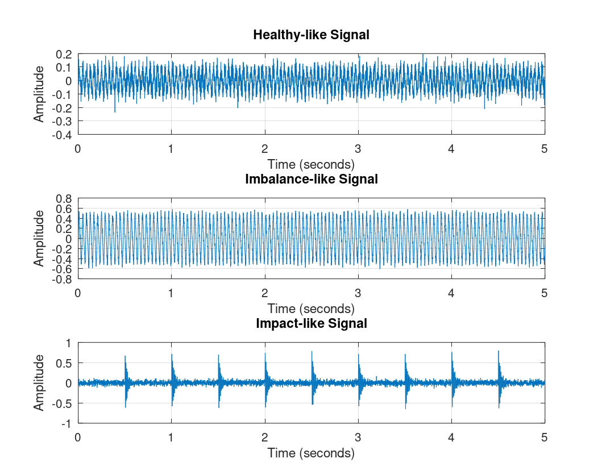
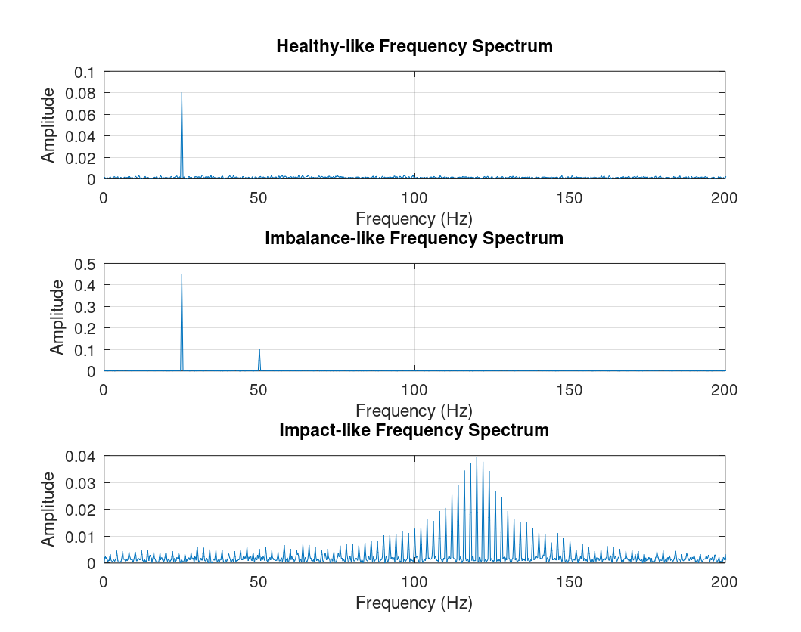

01. Data validation
Checks the input structure, missing or non-finite values, time ordering and sampling consistency before analysis.
VibraSense is a vibration signal analysis project that combines data validation, signal preprocessing, statistical feature extraction and frequency-domain analysis in a reproducible workflow.
Each stage is implemented as a separate function so it can be tested, inspected and reused independently.
Checks the input structure, missing or non-finite values, time ordering and sampling consistency before analysis.
Calculates RMS, peak amplitude, peak-to-peak amplitude, crest factor, standard deviation, energy, skewness and excess kurtosis.
Uses a Hann window and the Fast Fourier Transform (FFT) to inspect the single-sided amplitude spectrum and estimate dominant frequency.
Applies explicit, rule-based criteria to demonstrate how extracted features can flag selected signal patterns.
Includes checks for feature extraction, data validation, assessment rules and spectral accuracy.
Generates CSV summaries, assessment reports and figures through a single analysis script.
Explore three synthetic vibration patterns and compare their basic signal characteristics. All values are calculated in your browser.
RMS amplitude
Peak amplitude
Dominant frequency
Select a pattern to explore its characteristics.
The demonstration dataset contains three synthetic vibration signals: healthy-like, imbalance-like and impact-like. The figures illustrate how their time and frequency patterns differ.

Generated synthetic signals used for demonstration.

Time-domain comparison of the three signal patterns.

Frequency-domain comparison using the FFT.
The analysis is organized into clear, modular stages.